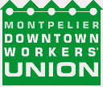

This is the news page for Department 600 - Public Service. This page displays *all* news items from this Department and its Unions. To see news only from a particular Union, click on the Union title below.
For an overview of the IWW's Union structure, please visit the Unions homepage.
Submitted on Sun, 04/23/2006 - 11:09am
By Dana Hooker - Wisconsin State Journal, April 21, 2006
 Bartenders, servers, baristas and others who work Downtown could soon be carrying more than your food or drinks. They may also be carrying union cards.
Bartenders, servers, baristas and others who work Downtown could soon be carrying more than your food or drinks. They may also be carrying union cards.
Local organizers for the Industrial Workers of the World union hope to sign up some of the over 4,000 Downtown Madison employees, many of them students who work part time in small businesses - a notoriously difficult group to unionize.
"(Downtown has) a very good concentration of similar kinds of workplaces and ones that are generally ignored by other unions because of the small size and the transient nature of the workers," said Amy Mondloch, an IWW member and lead organizer of the campaign.
But this wouldn't be a typical union, where labor leaders try to get a majority of the employees in a workplace to sign up and form a union.
Submitted on Thu, 03/23/2006 - 5:37pm
By Jeff Shantz, Punching Out Collective (NEFAC-Toronto)
Recently much interest and discussion has been generated by the emergence of union flying squads in Ontario. Flying squads -- rapid response networks of workers that can be mobilized for strike support, demonstrations, direct action and working class defense of immigrants, poor people, and unemployed workers -- present a potentially significant development in revitalizing organized labor activism and rank-and-file militancy.
Here are organizations with rank-and-file participation working to build solidarity across unions and locals and alongside community groups, engaging in direct action while striving to democratize their own unions. No wonder then that the re-appearance of flying squads in Ontario, in a context of halting resistance to a vicious neoliberal attack, notably among some sectors of the labor movement, has been cause for much excitement.
Submitted on Thu, 03/23/2006 - 5:23pm
Disclaimer - The following article is reposted here because it is an issue with some relevance to the IWW. The views of the author do not necessarily agree with those of the IWW and vice versa.
By Paul Finch - external secretary of Northwestern Anarchist Federation, formerly FNAC; reposted from nefac.net
The most significant period of labor unrest in British Columbia since 1983 took place in late April and early May of 2004, as a result of the failed province-wide “General Strike” movement. During this period, dissatisfaction with government policies and ensuing legislation escalated into wildcat strikes, walkouts, and significant mass public support for the actions of labor unions, community groups, and students in opposition to the government.
Submitted on Fri, 02/03/2006 - 2:53am
Industrial Worker - February 2006
The Madison (Wisconsin) General Membership Branch has launched a campaign to organize the 400 or so businesses in the downtown area. The campaign began last Fall by canvassing the district, gathering contacts in dozens of shops, and is now well on the way to mapping the entire district.
The IWW Downtown Workers Union has opened an office at State and Gilman streets, produced a brochure on Workers’ Rights in Madison, and is working to build a strong union presence among these low-paid, hard-working, unorganized workers. They are working to establish new industrial union branches in IUs 640 (restaurant and building service) and 660 (general distribution), and to build an ethos of solidarity unionism that will give these workers the tools to win some of the good things of life.
Submitted on Wed, 07/20/2005 - 3:25am
By Sky Barsch - Barre Montpelier Times-Argus, July 20, 2005

Disclaimer - The following article is reposted here because it covers an IWW campaign. The views of the author and the publisher do not necessarily agree with those of the IWW and vice versa.
MONTPELIER — Several members of the now-defunct Montpelier Downtown Workers' Union are reorganizing under a new name and are affiliating with a new union.
Some 25 to 30 Montpelier workers who were formerly members of the Montpelier Downtown Workers' Union, which was affiliated with the United Electrical, Radio and Machine Workers of America, are resurrecting themselves as a branch of the Industrial Workers of the World, according to a written statement from the newly named Montpelier Workers Union.
The Montpelier Downtown Workers Union was an effort to organize the capital city's retail and food-service workers. It officially called it quits earlier this summer, blaming high turnover and strong employer resistance as the reasons.
Montpelier Workers Union Steward Diana Duke, who works at Champlain Farms, said she hopes the new union will have 50 members and new contracts signed with shops by the first snowfall. She declined to say what stores the union had targeted for contracts. She said "pretty extravagant things" would be happening soon.